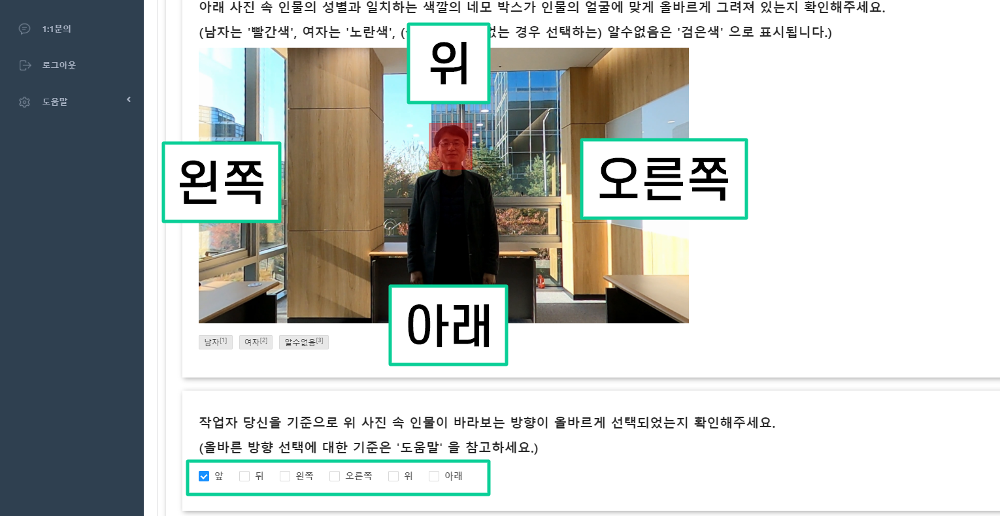
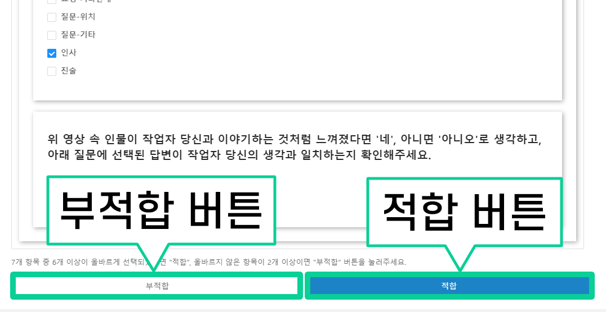
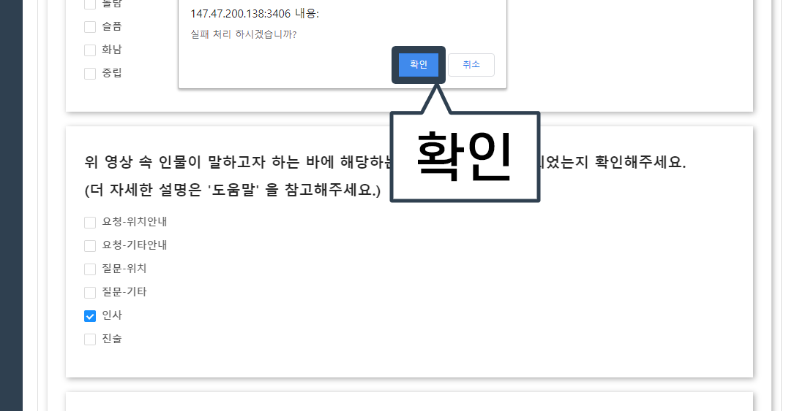
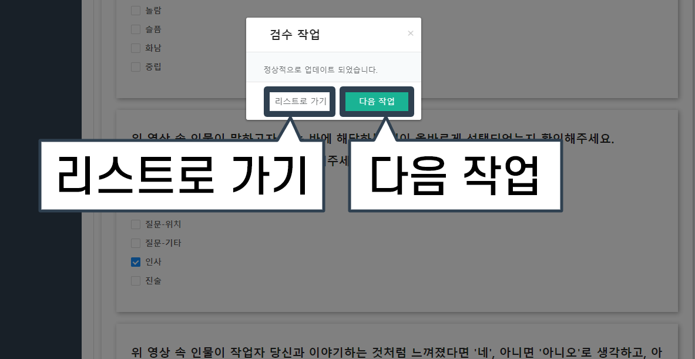

검수 작업 방법
1. 검수 버튼을 클릭합니다.

2. 파일명(파란글씨)을 클릭합니다.
3. 아래 주어진 사진처럼 이미지와 질문이 나타나면 작업을 시작합니다.

4. 사진 속 인물의 성별을 판단하고, 남자면 빨간색 네모박스가 얼굴에 맞게 그려져 있는지, 여자면 노란색 네모박스가 얼굴에 맞게 그려져 있는지 확인합니다.
(* 성별이 구별이 안될 경우, 검은색박스가 얼굴에 맞게 그려져 있는지 확인합니다.)
5. 작업자 본인을 기준으로, 아래 사진 속의 인물이 바라보고 있는 방향이 올바르게 선택되었는지 확인합니다.
(* 당신을 바라보고 있으면 “앞”, 등을 돌리고 있으면 “뒤”, 나머지 방향은 아래 사진을 참고하여 올바른 방향이 선택되었는지 확인합니다.)
6. 사진 속 인물의 표정에서 느껴지는 감정이 올바르게 선택되었는지 확인합니다.
(* 해당 인물의 감정은 작업자가 보고 느끼는 대로 판단합니다.)

7. 동영상을 시청하고 영상 속 인물이 하는 말과 텍스트가 일치하는지 확인합니다.

8. 동영상 속 인물이 하는 말(목소리)에서 느껴지는 감정이 올바르게 선택되었는지 확인합니다.
(* 해당 인물의 감정은 작업자가 듣고 느끼는 대로 판단합니다.)

9. 위 동영상 속 인물이 말하고자 하는 바에 해당하는 선택지가 올바르게 선택되었는지 확인합니다.
(* 더 자세한 설명은 오른쪽 더보기 버튼을 클릭하여 확인할 수 있습니다.) [더보기]
1. ‘요청’ 이란 대답과 행동을 동시에 요구하는 경우를 말합니다.
1-1. 단순히 위치만 물어보는 것이 아니라 해당 위치로 직접 안내를 요청하는 경우에 ‘요청-위치안내’ 를 선택합니다.
예) 응급실까지 데려다 주세요. / 서울대학교까지 가고 싶어요.
1-2. ‘요청-위치안내’ 에 해당하는 경우를 제외한 모든 안내 요청은 ‘요청-기타안내’ 를 선택합니다.
예) 체크인하려고 하는데요.
2. ‘질문’ 이란 대답 외의 행동을 요구하지 않는 경우를 말합니다.
2-1. 단순히 위치에 대한 정보만 요구할 경우 ‘질문-위치’ 를 선택합니다.
예) 응급실이 어디에 있나요? / 서울대학교로 가려면 어디로 가야하죠?
2-2. ‘질문-위치’ 에 해당하는 경우를 제외한 모든 정보 요구는 ‘질문-기타’ 를 선택합니다.
예) 이게 정말 200년된 작품이라고요?
3. ‘인사’ 란 만나거나 헤어질 때 하는 말을 의미합니다.
예) 안녕하세요. / 안녕히 가세요.
4. ‘진술’ 이란 1~3번의 경우 중 하나도 해당되지 않는 경우를 말합니다.
예) (감사인사) 감사합니다. / 네, 맞아요. / 멋지네요.
10. 위 동영상 속 인물이 작업자 본인과 소통을 시도하고 있다고 느끼면 ‘네’, 소통하고 있지 않다고 느끼면 ‘아니오’ 가 올바르게 선택되었는지 확인합니다.

11. 모든 항목에서 작업이 잘못된 항목이 하나라도 있다면 'Fail', 잘못된 부분이 하나도 없다면 'Pass' 를 선택합니다.
12-1. 'Fail' 버튼을 클릭하면 아래 사진과 같이 '실패 처리 하시겠습니까?' 라는 문구의 팝업이 뜹니다. 'Fail' 로 제출이 확실하다면 '확인' 버튼을 눌러 제출을 완료합니다.
12-2. 'Pass' 버튼을 클릭하면 아래 사진과 같이 '통과 처리 하시겠습니까?' 라는 문구의 팝업이 뜹니다. 'Pass' 로 제출이 확실하다면 '확인' 버튼을 눌러 제출을 완료합니다.

13. '확인' 버튼을 클릭하면 아래 사진과 같이 '리스트로 가기' 또는 '다음 작업' 버튼을 클릭할 수 있습니다. 작업을 이어서 하시려면 '다음 작업', 작업 목록을 확인하시려면 '리스트로 가기' 를 선택합니다.
13-1. '다음 작업' 을 선택할 경우, 아래 사진과 같은 화면이 뜨고 '확인' 을 클릭하면 다음 작업으로 넘어가게 됩니다.